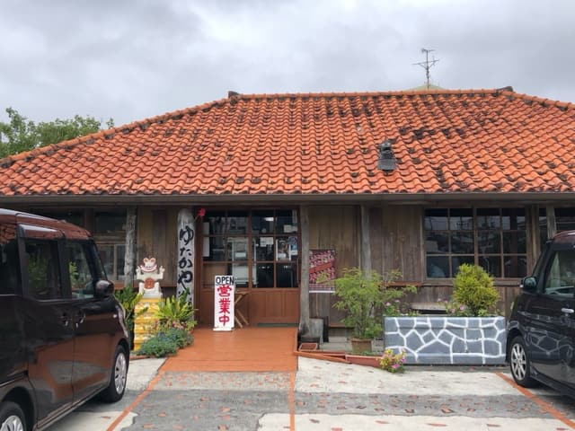
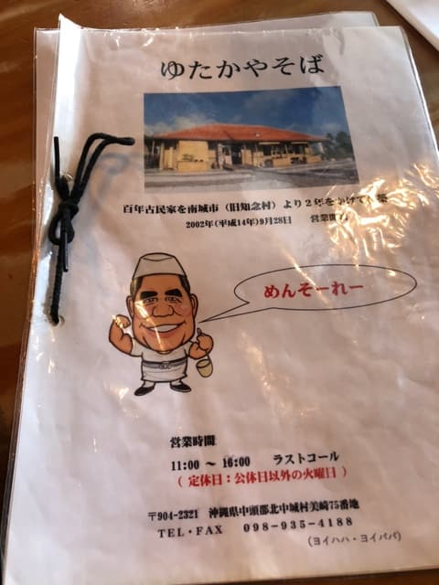
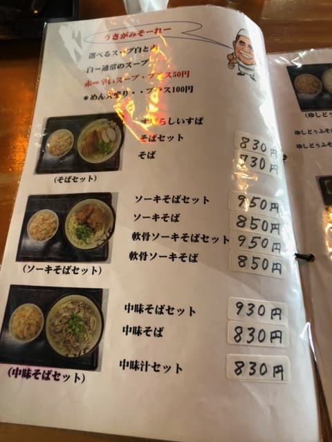
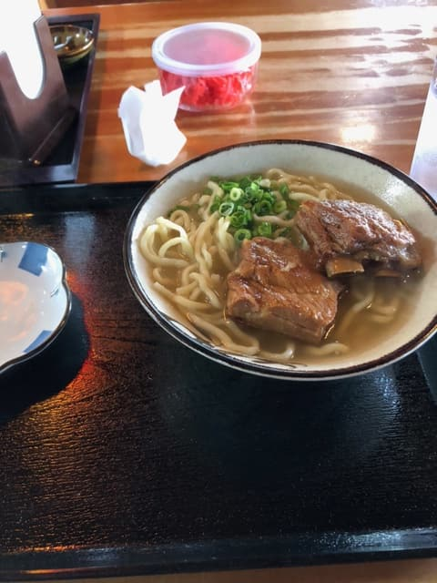

2023.5に食べました😄

11時オープンですが、直前から4～5台が一気に駐車場で待機。せっかく1番に来たので、1番乗りするために、慌てて車からでて入り口で待ちました^^;
店は赤瓦の古民家。沖縄っぽく観光客に受けそうな建物ですね😄


今回は通常のスープ（白）で「ソーキそば」を注文。

何も事前情報無しで来ましたが、先ずはスープを一飲み。豚骨ベースの出汁です😄 麺は中太のストレート系に少し縮れが入った感じです。少し柔らかめです。
ソーキは、他店とは違って、少し薄味な感じで、柔らかいですが、トロトロではなく、歯ごたえがある感じです。
評価（9点/15点）：普通に美味しいですが、ソーキが味染み染みのトロトロ系ではなく少し筋が残る感じでした。
麺 ：★★★☆☆（3）
スープ：★★★☆☆（3）
具 ：★★★☆☆（3）